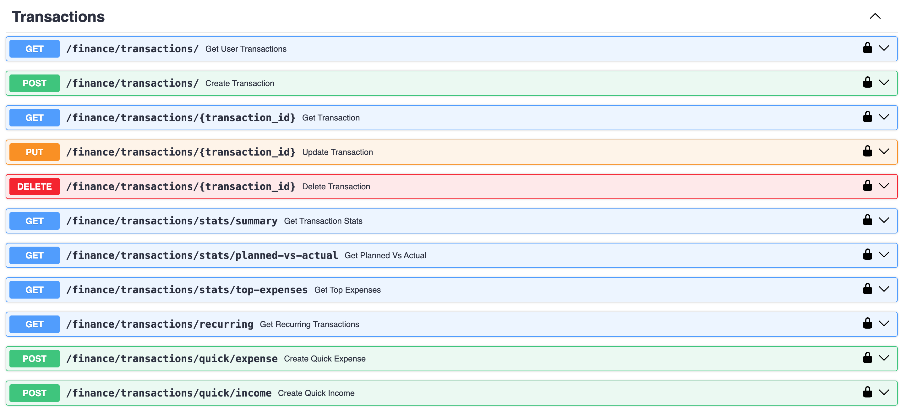
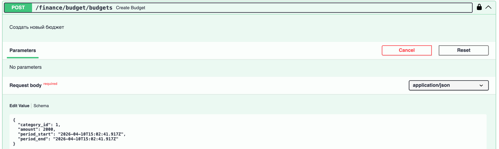
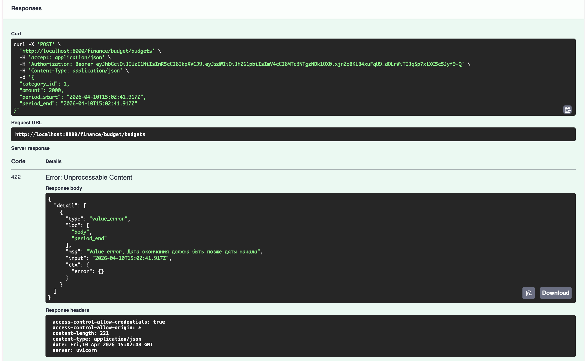
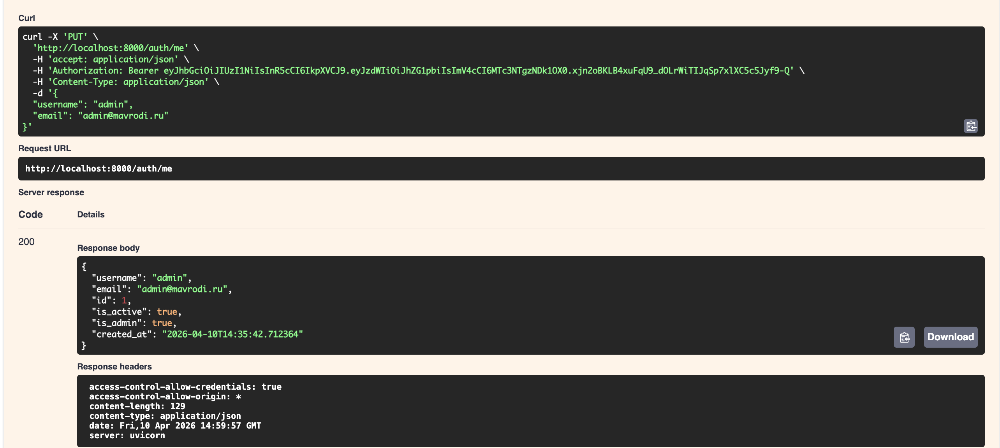

Лабораторная работа 1. Сервис управления личными финансами
Цель
Разработать серверное приложение на FastAPI для управления личными финансами: учёт доходов и расходов, бюджетирование по категориям, финансовые цели и аналитика. Реализовать аутентификацию пользователей через JWT.
Стек технологий
| Компонент | Технология |
|---|---|
| Фреймворк | FastAPI |
| ORM | SQLAlchemy 2.0 (Mapped, mapped_column) |
| База данных | PostgreSQL 17 |
| Миграции | Alembic |
| Аутентификация | JWT (python-jose) + bcrypt |
| Контейнеризация | Docker + Docker Compose |
| Пакетный менеджер | uv |
Структура проекта
app/
├── main.py # Точка входа, регистрация роутеров
├── api/
│ ├── routers/
│ │ ├── auth.py # Регистрация, логин, профиль
│ │ ├── budget.py # Бюджеты и категории
│ │ ├── transactions.py # Транзакции
│ │ └── analysis.py # Финансовые цели и анализ
│ └── schemas/
│ ├── user.py # Pydantic-схемы пользователя
│ └── finance.py # Pydantic-схемы финансов
├── core/
│ ├── database.py # Движок SQLAlchemy, сессия
│ ├── settings/
│ │ ├── config.py # Настройки приложения
│ │ └── security.py # JWT, хэширование паролей
│ └── db/
│ ├── models/
│ │ ├── user.py # Модели User, UserProfile
│ │ └── finance.py # Модели финансовых сущностей
│ └── crud/
│ ├── user/ # CRUD операции с пользователями
│ └── finance/ # CRUD операции с финансами
alembic/ # Миграции
docker-compose.yaml
Модель данных
Таблицы
| Таблица | Описание |
|---|---|
users |
Пользователи системы |
user_profiles |
Профиль пользователя (дата рождения) |
categories |
Категории доходов/расходов |
budgets |
Бюджеты пользователя по категориям |
transactions |
Транзакции (доходы и расходы) |
financial_goals |
Финансовые цели |
financial_analyses |
Результаты финансового анализа |
Связи
- User → UserProfile: one-to-one
- User → Budget: one-to-many (один пользователь — много бюджетов)
- User → Transaction: one-to-many
- User → FinancialGoal: one-to-many
- User → FinancialAnalysis: one-to-many
- Category → Budget: one-to-many (одна категория — в нескольких бюджетах)
- Category → Transaction: one-to-many
!!! note "Ассоциативная сущность"
Budget связывает User и Category и содержит собственные поля: amount, period_start, period_end, is_active — характеристики самой связи, а не только ссылки.
Ключевые модели
class Budget(Base):
__tablename__ = "budgets"
id: Mapped[int] = mapped_column(Integer, primary_key=True)
user_id: Mapped[int] = mapped_column(ForeignKey("users.id", ondelete="CASCADE"))
category_id: Mapped[int] = mapped_column(ForeignKey("categories.id", ondelete="CASCADE"))
amount: Mapped[Decimal] = mapped_column(Numeric(10, 2))
period_start: Mapped[datetime] = mapped_column(DateTime)
period_end: Mapped[datetime] = mapped_column(DateTime)
is_active: Mapped[bool] = mapped_column(Boolean, default=True)
class Transaction(Base):
__tablename__ = "transactions"
id: Mapped[int] = mapped_column(Integer, primary_key=True)
user_id: Mapped[int] = mapped_column(ForeignKey("users.id", ondelete="CASCADE"))
category_id: Mapped[int] = mapped_column(ForeignKey("categories.id", ondelete="CASCADE"))
amount: Mapped[Decimal] = mapped_column(Numeric(10, 2))
transaction_type: Mapped[TransactionType] = mapped_column(SAEnum(TransactionType))
description: Mapped[str] = mapped_column(Text)
is_planned: Mapped[bool] = mapped_column(Boolean, default=False)
is_recurring: Mapped[bool] = mapped_column(Boolean, default=False)
transaction_date: Mapped[datetime] = mapped_column(DateTime)
API
Аутентификация (/auth)

| Метод | Путь | Описание |
|---|---|---|
POST |
/auth/register |
Регистрация пользователя |
POST |
/auth/login |
Получение JWT-токена |
GET |
/auth/me |
Информация о текущем пользователе |
GET |
/auth/me/profile |
Профиль пользователя |
PUT |
/auth/me/profile |
Обновление профиля |
PUT |
/auth/me |
Обновление данных (username, email) |
PUT |
/auth/me/password |
Смена пароля |
GET |
/auth/users |
Список пользователей (только admin) |
Бюджеты и категории (/finance/budget)

| Метод | Путь | Описание |
|---|---|---|
GET |
/finance/budget/categories |
Список категорий |
POST |
/finance/budget/categories |
Создать категорию (admin) |
PUT |
/finance/budget/categories/{id} |
Обновить категорию (admin) |
DELETE |
/finance/budget/categories/{id} |
Удалить категорию (admin) |
GET |
/finance/budget/budgets |
Бюджеты пользователя |
POST |
/finance/budget/budgets |
Создать бюджет |
PUT |
/finance/budget/budgets/{id} |
Обновить бюджет |
DELETE |
/finance/budget/budgets/{id} |
Удалить бюджет |
GET |
/finance/budget/budgets/summary |
Сводка по бюджетам |
Транзакции (/finance/transactions)

| Метод | Путь | Описание |
|---|---|---|
GET |
/finance/transactions/ |
Список транзакций с фильтрацией |
POST |
/finance/transactions/ |
Создать транзакцию |
GET |
/finance/transactions/{id} |
Транзакция по ID |
PUT |
/finance/transactions/{id} |
Обновить транзакцию |
DELETE |
/finance/transactions/{id} |
Удалить транзакцию |
GET |
/finance/transactions/stats/summary |
Статистика транзакций |
GET |
/finance/transactions/stats/planned-vs-actual |
Сравнение план/факт |
GET |
/finance/transactions/stats/top-expenses |
Топ расходов |
POST |
/finance/transactions/quick/expense |
Быстрый расход |
POST |
/finance/transactions/quick/income |
Быстрый доход |
Финансовые цели и анализ (/finance/analysis)

| Метод | Путь | Описание |
|---|---|---|
GET |
/finance/analysis/goals |
Финансовые цели |
POST |
/finance/analysis/goals |
Создать цель |
PUT |
/finance/analysis/goals/{id} |
Обновить цель |
DELETE |
/finance/analysis/goals/{id} |
Удалить цель |
POST |
/finance/analysis/goals/{id}/progress |
Пополнить прогресс цели |
GET |
/finance/analysis/analyses |
История анализов |
POST |
/finance/analysis/analyses |
Запустить анализ |
Аутентификация
Реализована вручную без сторонних auth-библиотек.
Регистрация — пароль хэшируется через bcrypt перед сохранением:
def get_password_hash(password: str) -> str:
return pwd_context.hash(password)
Логин — возвращает JWT-токен:
def create_access_token(data: dict, expires_delta: timedelta) -> str:
to_encode = data.copy()
expire = datetime.utcnow() + expires_delta
to_encode.update({"exp": expire})
return jwt.encode(to_encode, settings.SECRET_KEY, algorithm=settings.ALGORITHM)
Защищённые эндпоинты — зависимость get_current_user декодирует токен из заголовка Authorization: Bearer <token> и возвращает текущего пользователя.

Миграции (Alembic)
Настроена асинхронная работа с PostgreSQL. Миграции применяются автоматически при старте контейнера:
uv run alembic upgrade head
Начальная миграция создаёт все таблицы, enum-типы (categorytype, transactiontype, analysisstatus) и индексы.
Примеры работы API
Получение информации о текущем пользователе

Создание бюджета
Запрос:

Ответ:

Обновление транзакции
Запрос:

Ответ:

Вывод
В ходе лабораторной работы разработано полноценное REST API приложение на FastAPI для управления личными финансами. Реализованы:
- 7 таблиц в PostgreSQL через SQLAlchemy ORM с типизированными моделями
- CRUD-операции для всех сущностей с вложенными связанными объектами в ответах
- JWT-аутентификация с хэшированием паролей (bcrypt), реализованная вручную
- Система миграций Alembic с автоматическим применением при запуске
- Разделение кода по слоям: модели, схемы, CRUD, роутеры
- Docker Compose для запуска приложения с PostgreSQL